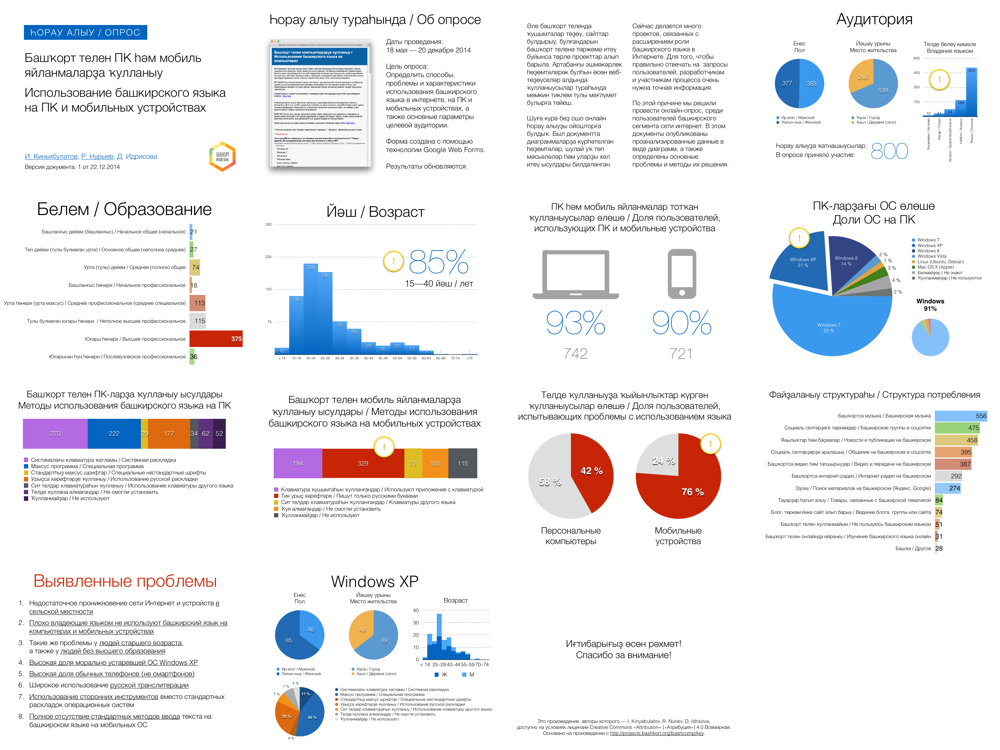
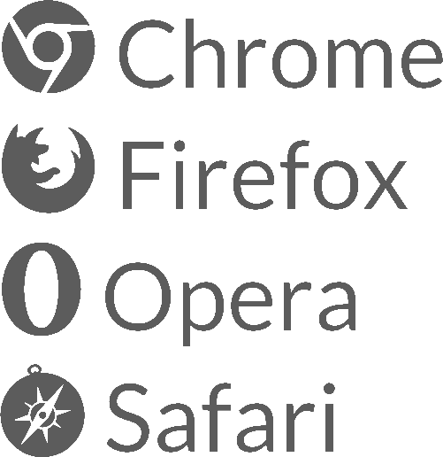
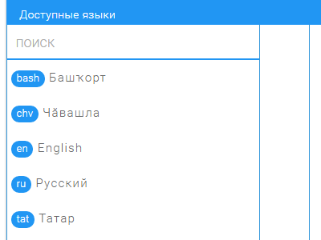
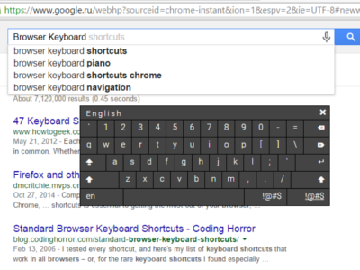
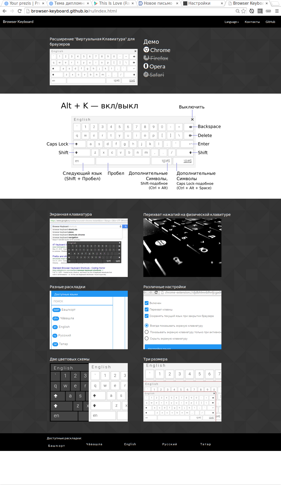

Виртуальная клавиатура для браузеров
Выполнил Сайф

Языки в РФ, поддерживаемые Windows 8
Башкирский язык
Русский язык
Татарский язык
Украинский язык
Язык саха
Языки РФ, не поддерживаемые Windows 8
Язык саха
Абазинский язык
Адыгейский язык
Алтайский язык
Бурятский язык
Ингушский язык
Черкесский язык
Калмыцкий язык
Карачаево-балкарский язык
Язык коми
Крымско-татарский язык
Марийский язык
Мокшанский язык
Ногайский язык
Осетинский язык
Тувинский язык
Удмуртский язык
Хакасский язык
Чеченский язык
Чувашский язык
Эрзянский язык
Языки Дагестана
Цель
Разработка инструмента текстового ввода для замены раскладки клавиатуры операционной системы
Сценарии использования
Сенсорный экран
Раскладки, которых нет в операционной системе
Редкоиспользуемые раскладки
Задачи
Провести анализ предметной области
Разработать алгоритм решения поставленной задачи
Разработать скрипт виртуальной клавиатуры
Внедрить JavaScript код в веб-браузер в качестве расширения
Выполнить тестирование
Создание формы связи разработчиков и пользователей для нахождения ошибок и добавления новых раскладок

Выбор разных раскладок, вне зависимости от системных настроек

Печать текста с помощью экранной клавиатуры

Перехват нажатий на физической клавиатуре и печать соответствующего символа
Прочие возможности
Скачивание языков с сервера
Горячие клавиши
Перетаскиваемая клавиатура (drag and drop)
Возможность вкл/выкл клавиатуры прямо на странице
Понятный пользовательский интерфейс
Две цветовые схемы и три размера экранной клавиатуры

Планы
Портирование под Firefox и Safari
Добавление других языковых раскладок
Исправление ошибок